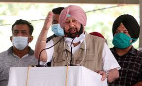
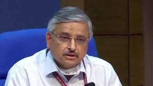

CURRENT SAMACHAR

Amarinder meets Shah to help end deadlock between
Centre and Farmers
NEW DELHI: Punjab chief minister Amarinder Singh on Thursday met Union home minister Amit Shah at the latter's residence here to help workout an amicable solution to
the current stand-off between the Centre and farmers over the new farm laws.The meeting is being held simultaneously with the interaction
between the agitating farmer leaders and the government at Vigyan Bhawan, sources said. According to sources, the meeting which was
slated in the morning was delayed by over two hours and started around noon.The Punjab chief minister and his Congress party have been
supporting the farmers' stir and the state Assembly had also passed a set of bills aimed at negating the Centre's farm legislation.

Will Coronavirus Vaccine be Available to All in India? Here’s What AIIMS Director Guleria
Has to Say
Coronavirus Vaccine Latest Update: Warding off apprehensions about the availability of the coronavirus vaccine to all
in the country, AIIMS Delhi Director Dr Randeep Guleria on Thursday said that it is not possible to vaccinate everyone in India in the
beginning. He added that there has to be a priority list to see that who should get vaccine first. Also Read - No Link Between 'Serious
Adverse Event' Suffered by Chennai Participant & Oxford COVID Vaccine Shot, Says DCGI “In beginning, vaccine won’t be available in sufficient
doses to give to everyone. We need a priority list to see that we vaccinate those who’ve high chances of dying due to Covid. Elderly, people
with comorbidities and front line workers should be vaccinated first,” Dr Guleria said. Also Read - Oxford-AstraZeneca Coronavirus Vaccine
Results Likely in Late-January: Report Saying that vaccines in India are in their final trial stage, he expressed hope that by the end
of this month or early next month, the country should get emergency use authorisation from Indian regulatory authorities to start giving
vaccine to public. Also Read - BioNtech, Pfizer Apply For Coronavirus Vaccine Approval in Europe, Target December Roll Out “There is good
data available that the vaccines are very safe. Safety and efficacy of vaccine not compromised at all. 70,000-80,000 volunteers given
vaccine, no significant serious adverse effects seen. Data shows that in the short term vaccine is safe,” Guleria added.
He further added that the work is going on at war-footing both at Centre and state level for vaccine distribution plan in terms of
maintaining cold chain, having appropriate storehouses available, developing strategy, training vaccinators and availability of syringes.
“Once booster dose is given, vaccine will give good amount of anti-body production and will start giving protection. This will last
for many months giving protection for a significant time when numbers will be less. We need to see type of immunity vaccine gives,” Guleria
added. Talking about the current wave of coronavirus, he said that now there is a decline in current wave and he hoped that this will
continue if all are able to have a good COVID-19 appropriate behaviour.Giving details about Chennai trial case, he said that it was an
incidental finding rather than related to vaccine. “When we vaccinate a large number of people, some of them may have some other disease,
which may not be related to vaccine,” he said.
FILMY SAMACHAR
Rajinikanth takes political plunge, to contest Tamil Nadu Assembly elections in 2021
New Delhi: Putting an end to speculations over his plunge into Tamil Nadu politics, superstar Rajinikanth on Thursday asserted
that he would launch his political party in January 2021. He also categorically said that his party would fight Assembly elections
in 2021 and “emerge victorious.” Assembly elections are due in Tamil Nadu during April-May 2021. Also Read - Superstar Rajinikanth
to Announce His Decision to Enter Politics Soon. He expressed confidence that his to be floated outfit would be able to “win elections
with the huge support of people.” Also Read - Not my Letter But Information on Health True: Rajinikanth Clears Air on 'Leaked Letter'
“In the upcoming Assembly elections, the emergence of spiritual politics will happen for sure. A wonder will happen,” he said on his
twitter handle. An announcement on matters connected to the party launch would be made on December 31, he said. Also Read - Rajinikanth
Shares Video Message For SP Balasubrahmanyam Says ‘Happy That he is Out of Danger Now’
Revealing pictures from her mehendi ceremony ahead of wedding with Gautam Kitchlu: Watch Kajal Aggarwal !!
Indian Sensation Kajal Aggarwal will wedlock her fiance Gautam Kitchlu on October 30. Sharing a picture from her Mehendi Ceremony
Kajal's hands were henned and was dressed in a simple green printed salwar kameez.On Wednesday, bidding farewell to her single status,
she had put out a picture with her sister Nisha and had written: 'Last 2 days as Ms.Aggarwal Chilling with my partner in everything
@nishaaggarwal.' The picture showed the two sisters huddled together, wearing their night clothes. Earlier this month she announced that
she was getting married to Gautam. In her note, she had written: 'I said yes. It gives me immense joy to share that I am getting married
to Gautam Kitchlu, on October 30, 2020 in Mumbai, in a small, private ceremony surrounded by our immediate families. This pandemic has
certainly shed a sobering light on our joy, but we are thrilled to start our lives together and know that all of you will be cheering us
on in spirit.I thank you for all the love you have showered upon me over the years and we seek your blessings as we embark upon this
incredible new journey. I will still continue doing what I cherish the most - entertaining my audience - now, with a whole new purpose
and meaning. Thank you for your unending support.' Immediately after her announcement, the internet was flooded with of them together.
On Dussehra, Kajal shared pictures with Gautam to wish her fans.